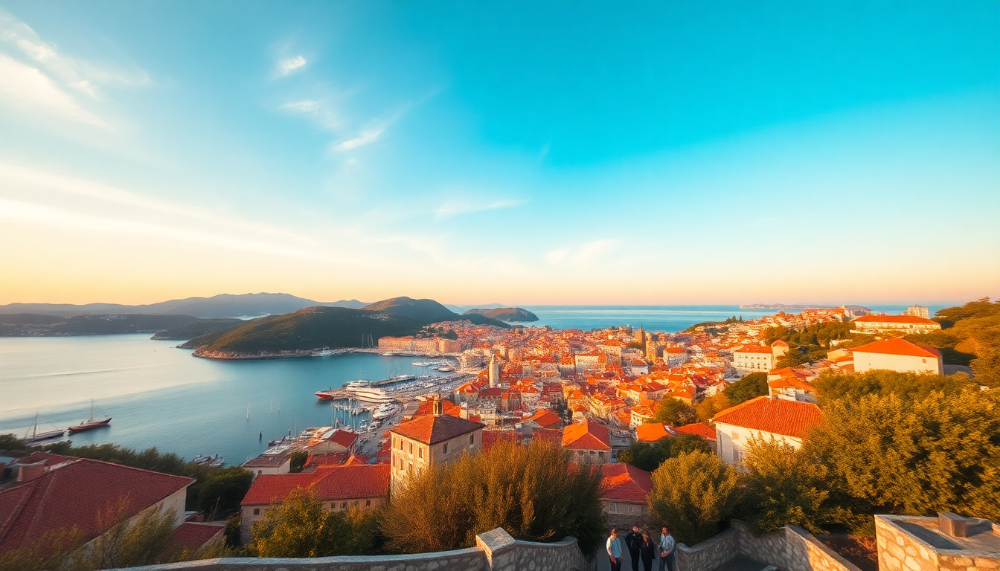

Best Time to Visit Croatia: Dubrovnik & Split Seasonal Guide

I’ve done the Croatia coast in July (sweating through a crowd at Pile Gate) and again in late September (having Lokrum Island almost to myself). The difference is night and day. If you’re planning a trip to Dubrovnik and Split, the timing of your visit will make or break your experience more than any hotel choice or restaurant booking. This guide breaks down exactly what each season delivers—so you can decide whether you want sun-scorched energy, shoulder-season calm, or off-season quiet.
When is the best weather for Dubrovnik and Split?
For pure beach-and-swimming weather, July and August are your only guarantees. Daytime temps hover around 30°C (86°F), and the sea hits a swimmable 24–26°C. But here’s the trade-off: the sun is relentless, and there’s almost no shade on the pebble beaches.
I found late May and September to be the sweet spot. In May, the water is still brisk (around 18°C), but the air is warm enough for shorts. By mid-September, the Adriatic is still holding summer heat, and you can sunbathe without feeling like you’re in a convection oven.
- Best months for swimming: July, August, early September
- Best months for sightseeing without melting: May, June, September
- Avoid if you hate crowds and heat: July 15–August 25
- Rain risk: November through February gets the most precipitation; Split sees about 10 rainy days in November
What are the crowds like month by month?
Dubrovnik’s Old Town feels like a theme park from 10 AM to 4 PM in peak season. Cruise ships disgorge thousands of people onto Stradun, and the city walls become a slow-moving human chain. Split’s Diocletian’s Palace is slightly better because the alleys are narrow and the crowd disperses, but Peristyle Square can still feel claustrophobic.
I walked the city walls in late October and had entire stretches to myself. In August, I waited 20 minutes just to get a photo of the view from Fort Lovrijenac.
- June: Busy but manageable; cruise traffic is building but not insane
- July–August: Peak chaos. Book everything 3 months ahead—restaurants, ferries, wall tickets
- September: Crowds drop sharply after the first week. Still warm, still lively, but you can breathe
- October–April: Quiet. Some restaurants close for winter. Dubrovnik’s cable car still runs, but many tours shut down
When do ferry schedules and island trips actually work?
If you want to day-trip from Split to Hvar or Vis, you need the Jadrolinija and Krilo ferries running at full frequency. That happens from late May to early October. Outside that window, the catamarans reduce to one or two departures per day—or stop entirely for smaller islands.
I tried a day trip from Split to Stari Grad on Hvar in early April. The ferry ran, but the return schedule forced me to leave by 3 PM. Not worth the rush.
- Full ferry schedule: June 1–September 30
- Reduced schedule: April, May, October
- No ferry to some islands (Vis, Lastovo): November–March
- Best month for island hopping: June or September—warm enough, boats run, and accommodation is half the August price
What about costs and accommodation availability?
Prices in Dubrovnik and Split are seasonal to an extreme degree. A room at Hotel Dubrovnik Palace in Babin Kuk that costs €250 in May jumps to €600+ in August. Split’s Airbnbs near the Riva promenade follow the same pattern.
I booked a private room in a guesthouse near Pile Gate for €45 in late October. Same room was €180 in July. If budget is a concern, aim for May or September.
- High season (July–August): Hotels 3x normal price; book 4–6 months ahead
- Shoulder season (May, June, September): Prices 30–50% lower; good availability
- Low season (November–March): Many hotels offer 50% discounts; some restaurants close entirely
- Best value: Second half of September—warm weather, lower prices, fewer people
Which months are best for hiking and active trips?
The coastal mountains around Dubrovnik and Split are brutal in July heat. I hiked Mount Srđ from Dubrovnik in June and was drenched by the time I reached the fort. In August, it’s genuinely dangerous without starting at dawn.
Split’s Marjan Hill is a better bet for a shorter hike, but even that gets punishing by 10 AM in midsummer. For serious walking, aim for April–May or October.
- Hiking Mount Srđ: Best in April, May, October
- Kayaking around Lokrum Island: June and September (water is calm, sun isn’t scorching)
- Plitvice Lakes day trip from Split: Avoid July–August unless you book the 7 AM entry; the boardwalks are packed by 10 AM
- Čiovo island bike ride from Trogir: Perfect in May—green, quiet, and wildflowers everywhere
Is Dubrovnik worth visiting in winter?
Yes, but with lowered expectations. From November to February, the city is genuinely quiet. The Christmas market on Stradun is small but charming, and you can walk the walls without elbowing anyone. But many restaurants on the side streets close for the season, and the weather is gray and windy.
I spent a week in Dubrovnik in January. The cable car was down for maintenance, and the ferry to Lokrum wasn’t running. But I had the entire Old Town to myself after 5 PM, and the bartender at Buža Bar (the cliffside bar) was happy to chat since there were only three customers.
- Open in winter: City walls (shortened hours), War Photo Limited, St. Blaise Church, some konobas near the harbor
- Closed in winter: Most boat tours, Lokrum ferry, some restaurants in Gundulićeva Poljana
- Best winter activity: Walking the Stradun at dusk with a hot wine from a street vendor; no queue at all
FAQ
Is it too crowded to visit Dubrovnik in June? June is busy but not unbearable. Cruise ship numbers are high, but the atmosphere is still festive rather than suffocating. If you stay inside the Old Town, you’ll feel the crowds during the day. I recommend booking a room outside the walls (near Boninovo or Lapad) and walking in—you get peace at night and easy access during the day.
Can I do a day trip from Split to Mostar in Bosnia in one day? Yes, but it’s a long day. The drive is about 2.5 hours each way, and border crossings can add 30–60 minutes. Several tour operators run daily trips from Split (usually leaving at 7 AM, returning around 6 PM). I did it in September and had enough time to see the Old Bridge, eat ćevapi at Tima-Irma, and walk the old town. June through September is the best window for this trip.
What’s the cheapest month to fly into Dubrovnik or Split? November and February typically have the lowest airfares. I’ve seen round-trip flights from London to Dubrovnik for €60 in late November. The trade-off is cold weather (8–12°C) and many attractions on reduced hours. If you’re flexible, late April offers a good balance of cheap flights and decent weather.
Conclusion
- Go in June or September for the best mix of good weather, open ferries, and manageable crowds
- Avoid July 15–August 25 unless you’re willing to pay triple and queue for everything
- Book accommodation 3–6 months ahead if visiting between May and September
- Winter trips work if you want solitude and low prices, but accept that many tours and ferries will be closed
- Hike and kayak in shoulder season—the heat in July and August makes active trips unpleasant